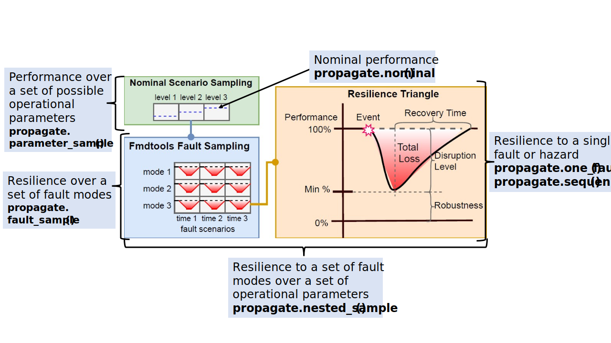

fmdtools.sim
Package for simulating system models in various configurations and scenarios.
The fmdtools.sim package is used to simulate models. It consists of four modules:
Functions to propagate faults through a user-defined fault model. |
|
Classes for defining scenarios to simulate. |
|
Module for defining samples of Faults and Parameters to simulate. |
|
Functions and Classes to enable optimization and search of model states and parameters. |
fmdtools.sim.propagate
{kind=link}
The propagate module is used to simulate the behaviors of a Simulable (Model or Block) with and without faults. As shown above, each of the methods (described below) fit a given simulation use-case for resilience assessment–single/multiple scenarios, in nominal/faulty scenarios, and at a single set or multiple sets of parameters.
Functions to propagate faults through a user-defined fault model.
Main Methods:
nominal(): Runs the model over time in the nominal scenario.one_fault(): Runs one fault in the model at a specified time.sequence(): Runs arbitrary scenario of fault modes at specified times.single_faults(): Creates and propagates a list of failure scenarios in a model over given model times.fault_sample(): Injects and propagates faults defined by a FaultSample.parameter_sample(): Simulates a model over a range of parameters defined by a ParameterSamplenested_sample(): Injects and propagates faults in the model defined by a given SampleApproach over a range of parameters defined by a ParameterSample.
Shared Method Parameters:
sim_kwargs: Simulation keyword arguments.run_kwargs: Run keyword arguments.mult_kwargs: Multi-scenario keyword arguments
Private Methods:
list_init_faults(): Creates a list of single-fault scenarios for the graph, given the modes set up in the fault modelprop_one_scen(): Runs a fault scenario in the model over timesave_helper(): Helper function for inline results saving.unpack _res_list(): Helper function for unpacking resultsexec_nom_par(): Helper function for executing nominal scenarios in parallelexec_nom_helper(): Helper function for executing nominal scenariosnom_helper(): Helper function for initial run of nominal scenarioscenlist_helper(): Helper function for approachexec_scen_par(): Helper function for executing the scenario in parallelexec_scen(): Executes a scenario and generates results and classifications given a model and nominal model historycheck_hist_memory(): Checks if the memory will be exhausted given the size of the mdlhist and number of scenarioscheck_mdl_memory(): Raises exception if model size is too large.check_overwrite(): Checks if file can be overwrittencheck_end_condition(): Helper function for prop_one_scen to end simulation earlier.get_result(): Helper function for prop_one_scen to get result at specific timestep.get_endclass_vars(): Helper function for get_result
- fmdtools.sim.propagate.check_end_condition(mdl, use_end_condition, t)
Check if the end condition of the simulation has been met.
- Parameters:
mdl (Simulable) – Model with or without a given end condition and simparam
use_end_condition (bool) – Whether to use the end condition
t (float) – time.
- Returns:
end_condition – Whether to end the simulation.
- Return type:
bool
- fmdtools.sim.propagate.check_hist_memory(mdlhist, nscens, max_mem=2000000000.0)
Check if the memory will be exhausted by the hist over the scenarios.
- fmdtools.sim.propagate.check_mdl_memory(mdl, nscens, max_mem=2000000000.0)
Check if memory will be exhausted by the model over the scenarios.
- fmdtools.sim.propagate.check_overwrite(save_args)
- fmdtools.sim.propagate.close_pool(kwargs)
Close pool to avoid memory problems.
- fmdtools.sim.propagate.exec_nom_helper(mdl, scen, name, mdl_kwargs={}, **kwargs)
Execute a nominal scenario (helper function).
- fmdtools.sim.propagate.exec_nom_par(arg)
Execute a nominal scenario (helper function/interface for parallel pools).
- fmdtools.sim.propagate.exec_scen(mdl, scen, save_args={}, indiv_id='', **kwargs)
Executes a scenario and generates results and classifications given a model and nominal model history.
- Parameters:
mdl (Simulable) – The model to inject faults in
scen (scenario) – scenario used to define time and faults where the fault is to be injected
save_args (dict) – Save dictionary to use in save_helper defining when/how to save the dictionary
indiv_id (str) – ID str to insert into the file name (if saving individually)
**kwargs (kwargs) –
sim_kwargsforprop_one_scen()
- fmdtools.sim.propagate.exec_scen_par(args)
Execute scenario (parallel execution helper function for pool.map).
- fmdtools.sim.propagate.fault_sample(mdl, fs, include_nominal=True, get_phasemap=False, **kwargs)
Injects and propagates faults in the model defined by a FaultSample/SampleApproach.
NOTE: When calling in a script/module using parallel=True, execute using the protection statement
if __name__ == 'main': results, mdlhists = fault_sample(mdl, fs)
Otherwise, the method will keep spawning parallel processes. See multiprocessing documentation.
- Parameters:
mdl (Simulable) – The model to inject faults in.
fs (FaultSample/SampleApproach) – FaultSample used to define the list of faults and sample time for the model.
include_nominal (bool, optional) – Whether to return nominal hists/results back. Default is True.
get_phasemap (bool, optional) – Whether to regenerate the FaultSample using new phase information.
**kwargs (kwargs) –
Additional keyword arguments, may include:
sim_kwargskwargsSimulation options for
prop_one_scen()
run_kwargskwargsRun options for
nom_helper()and others
mult_kwargskwargsMulti-scenario options
- Returns:
results (Result) – A Result dictionary with results desired from each scenario corresponding to desired_result over the set of scenarios.
mdlhists (History) – A History dictionary with the tracked scenario (including the nominal)
- fmdtools.sim.propagate.fault_sample_from(mdl, faultdomains={}, faultsamples={}, get_phasemap=True, scen={}, include_nominal=False, **kwargs)
Create and simulate a fault_sample from the given arguments.
Use to generate and sample from phases in the same simulation.
- Parameters:
mdl (Simulable) – Model to simulate
faultdomains (dict) – Dict of arguments to SampleApproach.add_faultdomains
faultsamples (dict) – Dict of arguments to SampleApproach.add_faultsamples FaultSamples to add to othe SampleApproach and their arguments. Has structure:: {‘fs_name’: (*args, **kwargs)} where args and kwargs are arguments/kwargs to SampleApproach.add_faultsamples.
get_phasemap (bool, optional) – Whether to generate the FaultSample from the phasemap. The default is True.
scen (scenario, optional) – Scenario to use as nominal. The default is {}.
include_nominal (bool, optional) – Whether to return nominal hists/results back. Default is False.
**kwargs (kwargs) – kwargs to simulate over
- Returns:
res (Result) – A Result dictionary with results desired from each scenario corresponding to desired_result over the set of scenarios.
hist (History) – A History dictionary with the tracked scenario (including the nominal)
app (SampleApproach) – Generated SampleApproach
- fmdtools.sim.propagate.gen_sampleapproach(mdl, faultdomains={}, faultsamples={}, get_phasemap=False, nomhist={})
Generate a SampleApproach from faultdomain and faultsample arguments.
- fmdtools.sim.propagate.get_endclass_vars(mdl, desired_result, result)
Get variables in the model corresponding to the provided desired_result dictionary.
Appends them to provided result.
- fmdtools.sim.propagate.get_result(scen, mdl, desired_result, nomhist={}, nomresult={}, time=0.0)
Get the desired_result specified from the model.
- fmdtools.sim.propagate.list_init_faults(mdl, times)
Create list of single-fault scenarios for the given Model mode information.
- Parameters:
mdl (Simulable/Function) – Simulable
times – list with list of times in (start_time, end_time)
- Returns:
faultlist – A list of SingleFaultScenario
- Return type:
list
- fmdtools.sim.propagate.mult_kwargs = {'close_pool': True, 'max_mem': 2000000000.0, 'pool': False, 'showprogress': True}
Multi-scenario keyword arguments.
- Parameters:
pool (process pool, optional) – Process Pool Object from multiprocessing or pathos packages. e.g. parallelpool = mp.pool(n) for n cores (multiprocessing) or parallelpool = ProcessPool(nodes=n) for n cores (pathos) If False, the set of scenarios is run serially. The default is False
showprogress (bool, optional) – whether to show a progress bar during execution. default is true
max_mem (int) – Max memory (warns the user when memory is above threshold)
- fmdtools.sim.propagate.nested_sample(mdl, ps, get_phasemap=False, faultdomains={}, faultsamples={}, include_nominal=True, **kwargs)
Simulate a set of fault scenarios within a ParameterSample.
NOTE: When calling in a script/module using parallel=True, execute using the protection statement
if __name__ == "main": results, mdlhists = nested_sample(mdl, ps)
Otherwise, the method will keep spawning parallel processes. See multiprocessing documentation.
- Parameters:
mdl (Simulable) – Model Object to use in the simulation.
ps (ParameterSample) – Parameter Scenario defining the parameters the model will be run over
get_phasemap (Bool/List/Dict, optional) – Whether to use nominal simulation phasemap to set up the SampleApproach.
faultdomains (dict) – Dict of arguments to SampleApproach.add_faultdomains
faultsamples (dict) – Dict of arguments to SampleApproach.add_faultsamples FaultSamples to add to othe SampleApproach and their arguments. Has structure:: {‘fs_name’: (*args, **kwargs)} where args and kwargs are arguments/kwargs to SampleApproach.add_faultsamples.
include_nominal (bool, optional) – Whether to return nominal hists/results back. Default is False.
**kwargs (kwargs) –
Additional keyword arguments, may include:
sim_kwargskwargsSimulation options for
prop_one_scen().
run_kwargskwargsRun options for
nom_helper()and others.
mult_kwargskwargsMulti-scenario options
- app_argsmdl_kwargs
Keyword arguments for the SampleApproach. See sim.sample.SampleApproach documentation.
- Returns:
nested_results (Result) – A nested Result dictionary with the desired results of each scenario.
nested_mdlhists (History) – A nested History dictionary with the history of all model states for each scenario
apps (dict) – A dictionary of the SampleApproaches generated corresponding to each nominal scenario with structure {‘nomscen1’: app1}
- fmdtools.sim.propagate.nom_helper(mdl, ctimes, protect=True, save_args={}, mdl_kwargs={}, scen={}, warn_faults=True, **kwargs)
Run initial run of nominal scenario.
- Parameters:
mdl (Simulable (object or class)) – Model of the system
ctimes (float/list) – Times to copy the nominal model from
protect (bool) –
Whether or not to protect the model object via copying. Options:
True (default): re-instances the model so that multiple simulations can
be run successively without causing problems - False : Thus, the model object that is returned can be modified and analyzed if needed
save_args (dict (optional)) –
Dictionary specifying if/how to save results. Default is {}, which doesn’t save anything. Has structure
{'mdlhists':mdlhistargs, 'endclass':endclassargs, 'indiv':indiv}
mdl_kwargs (dict, optional) –
Model arameter dictionary. Has structure
{"p": Parameter, "sp":SimParam, "track":track}
scen (scenario, optional) – Scenario to use. The default is {}.
warn_faults (bool) – choose whether to display a warning message if faults are identified during nominal runs. Default is True.
**kwargs (kwargs) –
sim_kwargssimulation options forprop_one_scen()
- Returns:
result (Result) – results dict from nominal sim
nommdlhist (History) – result history from nominal sim
nomscen (dict) – nominal scenario dict
mdls (list) – Models from copy time(s) ctimes
t_end_nom (float) – Nominal simulation end time
- fmdtools.sim.propagate.nominal(mdl, **kwargs)
Run the model over time in the nominal scenario.
- Parameters:
mdl (Simulable) – Model of the system
**kwargs (kwargs) –
Additional keyword arguments, may include:
sim_kwargskwargsSimulation options for
prop_one_scen()
run_kwargskwargsRun options for
nom_helper()and others
- Returns:
result (Result) –
dict of result corresponding to desired_result, e.g.
Result({'endclass': endclasses, 'endfaults': endfaults, 'varname': var, t: {'endclass': endclasses...} ...})
nomhist (History) – A History dict with a history of modelstates
- fmdtools.sim.propagate.one_fault(mdl, *fxnfault, time=0, f_kw={}, **kwargs)
Run one fault in the model at a specified time.
- Parameters:
mdl (Simulable) – The model to inject the fault in.
*fxnfault (str) – Has options: - ‘fxnname’, ‘faultmode’ when a Model is provided, or - ‘faultmode’ when a Block/Function is provided
time (float, optional) – Time to inject fault. Must be in the range of model times (i.e. in range(0, end, mdl.sp.dt)). The default is 0.
f_kw (dict) – Non-default fault keyword args.
**kwargs (kwargs) –
Additional keyword arguments, may include:
sim_kwargskwargsSimulation options for
prop_one_scen()
run_kwargskwargsRun options for
nom_helper()and others
- Returns:
result (Result) –
Result dict of result corresponding to desired_result, with structure,:
Result({'nominal': nomresult, 'faulty': faultyresult})
mdlhists (History) – A dictionary of the states of the model of each fault scenario over time with structure: {‘nominal’: nomhist, ‘faulty’: faulthist}
- fmdtools.sim.propagate.pack_mult_kwargs(**kwargs)
Create subset of mult kwargs.
- fmdtools.sim.propagate.pack_run_kwargs(**kwargs)
Create subset of run kwargs for
nom_helper()andrun_kwarg.
- fmdtools.sim.propagate.pack_sim_kwargs(**kwargs)
Create
sim_kwargsforprop_one_scen().
- fmdtools.sim.propagate.parameter_sample(mdl, ps, **kwargs)
Simulate a set of nominal scenarios through a model.
Useful for exploring/understanding the sets of parameters where the system will run nominally and/or fail.
- Parameters:
mdl (Simulable) – Model to simulate
ps (ParameterSample) – Parameter Sample defining the nominal scenarios to run the system over.
**kwargs (kwargs) –
Additional keyword arguments, may include:
sim_kwargskwargsSimulation options for
prop_one_scen()
run_kwargskwargsRun options for
nom_helper()and others
mult_kwargskwargsMulti-scenario options
- Returns:
nomresults (Result) – Result dict of result corresponding to desired result {‘scenname’: result}
nomhists (History) – History of model histories, with structure {‘scenname’: mdlhist}
- fmdtools.sim.propagate.process_nominal(mdlhists, nomhist, results, nomresult, t_end_nom, **kwargs)
Add/save nominal hists/result to overall hist/result.
- fmdtools.sim.propagate.prop_one_scen(mdl, scen, ctimes=[], nomhist={}, nomresult={}, **kwargs)
Simulate a single scenario in the model over time.
- Parameters:
mdl (Simulable) – The model to inject faults in.
scen (Scenario) – The Scenario to run.
ctimes (list, optional) – List of times to copy the model (for use in staged execution). The default is [].
nomhist (dict, optional) – Model history dictionary from previous runs, for use in creating the new mdlhist. The default is {}.
nomresult (dict, optional) – Nominal result dictionary (to compare with current if desired)
**kwargs (kwargs) – simulation options, see
sim_kwargs
- Returns:
result (Result) – dict of result corresponding to desired_result.
mdlhist (dict) – A dictionary with a history of modelstates.
c_mdl (dict) – A dictionary of models at each time given in ctimes with structure {time:model}
t_end (float) – Last sim time
- fmdtools.sim.propagate.run_kwargs = {'mdl_kwargs': {}, 'protect': True, 'save_args': {}}
Run keyword arguments.
- Parameters:
protect (bool) –
Whether or not to protect the model object via copying. Options:
True (default): re-instances the model so that multiple simulations can be run successively without causing problems
False : Thus, the model object that is returned can be modified and analyzed if needed
save_args (dict (optional)) –
Dictionary specifying if/how to save results. Default is {}, which doesn’t save anything. Has structure
{'mdlhists':mdlhistargs, 'endclass':endclassargs, 'indiv':indiv}
where mdlhistargs and endclassargs are dictionaries of save arguments, e.g.,:
{'filename':'filename.npz', 'filetype':'npz', 'overwrite':True}
and indiv is an (optional) bool specifying whether to save results individually (in a folder) or as a monolythic file.
mdl_kwargs (dict (optional)) –
Parameter dictionary to be instantiated in the model prior to simulation. Has structure
{"p": Parameter, "sp":SimParam, "track":track}
Parameter dictionaries do not need to be complete (if incomplete).
- fmdtools.sim.propagate.save_helper(save_args, endclass, mdlhist, indiv_id='', result_id='')
Save results (helper function).
- Parameters:
save_args (dict) –
Dict with structure
{'mdlhists': mdlhistargs, 'endclass': endclassargs, 'indiv': individual_saving}
where mdlhistargs and endclassargs are dictionaries of arguments to Result.save (i.e., {‘filename’:’filename.pkl’, ‘filetype’:’pickle’, ‘overwrite’:True}) and individual_saving is a bool (True/False)
endclass (dict) – dict of end-state classifications (from simulation)
mdlhist (dict) – dict of model histories (from simulation)
- fmdtools.sim.propagate.scenlist_helper(mdl, scenlist, c_mdl, **kwargs)
- fmdtools.sim.propagate.sequence(mdl, seq={}, faultseq={}, disturbances={}, scen={}, rate=nan, include_nominal=True, **kwargs)
Run a sequence of faults and disturbances in the model at given times.
- Parameters:
mdl (Simulable) – The model to inject the fault in.
seq (dict) – Scenario dict defining the scenario {time:{faults:faults, disturbances:disturbances}}
faultseq (dict) – Dict of times and modes defining the fault scenario {time:{fxns: [modes]},}
disturbances (dict) –
Dict of times and states defining the disturbances in the scenario:
{time: {path.to.state: stateval}}
scen (Scenario, optional) – Scenario dictionary, if already constructed (for external calls)
rate (float, optional) – Input rate for the sequence (must be calculated elsewhere)
include_nominal (bool, optional) – Whether to return nominal hists/results back. Default is True.
**kwargs (kwargs) –
Additional keyword arguments, may include:
sim_kwargskwargsSimulation options for
prop_one_scen()
run_kwargskwargsRun options for
nom_helper()and others
- Returns:
result (Result) –
Result dict of result corresponding to desired_result, with structure,:
Result({'nominal': nomresult, 'faulty': faultyresult})
mdlhists (dict) – A dictionary of the states of the model of each fault scenario over time with structure: {‘nominal’: nomhist, ‘faulty’: faulthist}
- fmdtools.sim.propagate.sim_kwargs = {'cut_hist': True, 'desired_result': 'endclass', 'run_stochastic': False, 'staged': False, 'use_end_condition': True, 'warn_faults': True}
Simulation keyword arguments.
- Parameters:
desired_result (dict/str/list) –
Desired quantities to return in the first argument. Options are:
’endclass’: a dict returned by find_classification (default)
’endfaults’: a dict of returned fault modes and their propagation, e.g.,
{'endfaults':faultdict, 'faultprops':faultpropdict}
’graph’/’flowgraph’/etc: a networkx graph of the model with fault modes superimposed
’fxnname.varname’: variable values to get
a list of the above arguments (for multiple at the end)
a dict of lists (for multiple over time), e.g.,
{time:[varnames,... 'endclass']}
The default is ‘all’.
run_stochastic (bool) – Whether to run stochastic behaviors or use default values. Default is False. Can set as ‘track_pdf’ to calculate/track the probability densities of random states over time.
staged (bool, optional) – Whether to inject the faults in a copy of the nominal model at the fault time (True) or instantiate a new model for the fault (False). Setting to True roughly halves execution time. The default is False.
warn_faults (bool) – Whether to produce a warning when faults occur in a nominal sim.
- fmdtools.sim.propagate.single_faults(mdl, times=[0.0], include_nominal=True, **kwargs)
Create and propagates a list of failure scenarios in a model.
NOTE: When calling in a script/module using parallel=True, execute using the protection statement
if __name__ == 'main': results, mdlhists = single_faults(mdl)
Otherwise, the method will keep spawning parallel processes. See multiprocessing documentation.
- Parameters:
mdl (Simulable) – The model to inject faults in
times (list) – List of times to inject the single faults in. Default is [1.0]
include_nominal (bool, optional) – Whether to return nominal hists/results back. Default is True.
**kwargs (kwargs) –
Additional keyword arguments, may include:
sim_kwargskwargsSimulation options for
prop_one_scen()
run_kwargskwargsRun options for
nom_helper()and others
mult_kwargskwargsMulti-scenario options
- Returns:
results (Result) – Result dict of result corresponding to desired_result {scenname:result}
mdlhists (History) – History dict with the history of all tracked model states for each scenario (including the nominal)
- fmdtools.sim.propagate.unpack_mult_kwargs(kwargs)
Unpack the mult kwarg parameters for the
parameter_sample().
- fmdtools.sim.propagate.unpack_res_list(scenlist, res_list)
Create result/history from output list.
- fmdtools.sim.propagate.unpack_sim_kwargs(**kwargs)
Unpack
sim_kwargsparameters forprop_one_scen().
fmdtools.sim.scenario
Classes for defining scenarios to simulate.
Classes:
Injection: Defines faults and disturbances to inject at a specific time.Scenario: Defines a generic scenario to simulation.SingleFaultScenario: Defines the scenario of a single fault injected in a function.JointFaultScenario: Defines the scenario of multiple faults injected in a function at the same time.ParameterScenario: Defines the scenario of a model having parameter values.Sequence: Creates an overall sequence of Injections from a given sequence of faults and disturbances.
- class fmdtools.sim.scenario.BaseScenObj
Bases:
dataobjectBase class for Scenarios and injections.
- copy_with(**kwargs)
Copy the Scen with the given kwargs.
- Parameters:
**kwargs (kwargs) – Fields to change in the copy
- Returns:
copy – Copy of self with optional kwargs.
- Return type:
- get(entry, fallback)
Get entry if present, otherwise return fallback.
- Parameters:
entry (str) – Name of field to get.
fallback (val) – Fallback value
- Returns:
val_to_get – Value of entry (or fallback, if no entry)
- Return type:
val
- class fmdtools.sim.scenario.BaseScenario
Bases:
BaseScenObjBase class for scenarios.
- Parameters:
sequence (Sequence) – Sequence of faults and distrubances over time defined by Sequence
times (tuple) – Times faunts/distrubances will occur.
Variables (Class)
---------------
prob (float) – Scenario probability
rate (float) – Scenario rate.
name (str) – Scenario name.
time (float) – Start of scenario.
- name = 'nominal'
- prob = 1.0
- rate = 1.0
- start_time()
Get the first time in the scenario.
- time = 0.0
- times: tuple
- class fmdtools.sim.scenario.Injection
Bases:
BaseScenObjDefines a single fault/disturbance injection.
Fields
- faultsdict
Faults to inject with structure {‘fxnname’: [faults]} or {‘fxnname’: {‘faultname’: Fault()}}
- disturbancesdict
Disturbances to inject with structure {‘path.to.state’: statevalue}
- disturbances: dict
- faults: dict
- update(inj)
Update the injection with the given faults/disturbances.
- Parameters:
inj (dict) – Dict with structure {‘faults’: faults, ‘disturbances’: disturbances}
- class fmdtools.sim.scenario.JointFaultScenario
Bases:
BaseScenarioClass defining a joint fault occuring. Extends BaseScenario.
- Parameters:
joint_faults (int) – Joint Faults in the scenario
functions (tuple) – Functions where the faults are to occur
modes (tuple) – Names of the fault modes
- classmethod from_faults(faulttups, time, mdl=None, phasemap=None, weight=1.0, baserate='ind', p_cond=1.0, starttime=None, **kwargs)
Generate JointFaultScenario given fault names, time.
- functions: tuple
- joint_faults: int
- modes: tuple
- name: str
- phase: tuple
- rate: float
- time: float
- times: tuple
- class fmdtools.sim.scenario.ParameterScenario
Bases:
BaseScenarioClass defining a nominal (non-fault-injection) Scenario.
- Parameters:
p (dict) – non-default Parameter fields
r (dict) – non-default Rand fields
sp (dict) – non-default SimParam fields
prob (float) – probability
inputparams (dict) – inputs to parameter generator
rangeid (str) – name of containing range
name (str) – scenario name
- get_param(param, default='NA')
Get a parameter from the scenario.
- Parameters:
param (str) – Name of parameter (e.g., “p.size”)
default (val, optional) – Default value for field (if not present). The default is “NA”.
- Returns:
pval – Value of the parameter.
- Return type:
val
- get_params(*params, default='NA')
Get a list of parameters for the scenarios.
- Parameters:
*params (str) – Name of parameters
default (val, optional) – Default value for parameters (if not present). The default is “NA”.
- Returns:
params – List of parameters.
- Return type:
list
- inputparams: dict
- name: str
- p: dict
- prob: float
- r: dict
- rangeid: str
- sp: dict
- start_time()
Return the start time for a parameter scenario–0.0.
- times: tuple
- class fmdtools.sim.scenario.Scenario
Bases:
BaseScenarioClass defining generic scenarios. Extends BaseScenario.
- name: str
- rate: float
- time: float
- times: tuple
- class fmdtools.sim.scenario.Sequence(faultseq={}, disturbances={})
Bases:
UserDictDefines a dict with a sequence of faults and disturbances.
Examples
>>> s = Sequence(faultseq={1: {'fxnname':['mode1']}}, ... disturbances={2: {'state.name': 1.0}}) >>> s[1] Injection(faults={'fxnname': ['mode1']}, disturbances={}) >>> s[2] Injection(faults={}, disturbances={'state.name': 1.0})
>>> Sequence({1: {'fxnname': ['mode1']}}, {1: {'state.name': 1.0}}) {1: Injection(faults={'fxnname': ['mode1']}, disturbances={'state.name': 1.0})}
- classmethod from_fault(faulttup, time, **kwargs)
Generate sequence from single fault mode faulttup (fxn, mode).
- update_sequence(new_sequence)
Update the sequence given a different sequence.
- Parameters:
new_sequence (Sequence) – Sequence to update from
Examples
>>> s = Sequence(faultseq={1: {'fxnname':['mode1']}}, ... disturbances={2: {'state.name': 1.0}}) >>> s2 = Sequence({1: {'fxnname': ['mode2']}}, {1: {'state.name': 1.0}}) >>> s.update_sequence(s2) >>> s {1: Injection(faults={'fxnname': ['mode2']}, disturbances={'state.name': 1.0}), 2: Injection(faults={}, disturbances={'state.name': 1.0})}
- class fmdtools.sim.scenario.SingleFaultScenario
Bases:
BaseScenarioClass defining a single fault occuring. Extends BaseScenario.
- Parameters:
function (str) – Function where the fault occurs
fault (str) – Name of the fault
- fault: str
- classmethod from_fault(faulttup, time, mdl=None, weight=1.0, phasemap=None, starttime=None, **kwargs)
Generate the fault scenario for faulttup at time.
Examples
>>> SingleFaultScenario.from_fault(('fxn', 'fault'), 10) SingleFaultScenario(sequence={10.0: Injection(faults={'fxn': ['fault']}, disturbances={})}, times=(10,), function='fxn', fault='fault', rate=1.0, name='fxn_fault_t10', time=10, phase='') >>> SingleFaultScenario.from_fault(('fxn', 'fault'), 10, prob=10) SingleFaultScenario(sequence={10.0: Injection(faults={'fxn': {'fault': {'prob': 10}}}, disturbances={})}, times=(10,), function='fxn', fault='fault', rate=1.0, name='fxn_fault_t10', time=10, phase='')
- function: str
- name: str
- phase: str
- rate: float
- time: float
- times: tuple
- fmdtools.sim.scenario.create_scenname(faulttup, time)
Create a scenario name for a given fault scenario.
fmdtools.sim.sample
Module for defining samples of Faults and Parameters to simulate.
Has classes:
ParameterDomain: Defines domain for sampling from Parameters.FaultDomain: Defines domain for sampling from Faults.FaultSample: Defines a sample of fault scenarios.SampleApproach: Defines a set of fault scenario samples.ParameterSample: Defines a sample of a set of parameters.ParameterResultSample: Defines a sample from Result values.ParameterHistSample: Defines a sample from History values.
- class fmdtools.sim.sample.BaseSample
Bases:
objectOverarching sample class (for FaultSample and SampleApproach).
- Subclasses should have methods:
scenarios() for getting all scenarios from the sample
times() for getting all times from the sample
- get_groups_scens(groupnames, groups)
Get scenarios related to the given groups.
- Parameters:
groupnames (list) – List of scenario properties to group (e.g., ‘function’’, ‘fault’)
groups (list) – Groups to get e.g, [ (‘fxnname1’, ‘fault1’)]
- Returns:
scen_groups – dict of scenarios for each group with structure {(field1_val, field2_val) : [scenarios]}
- Return type:
dict
- get_metric(value, ids='all', **kwargs)
Get metrics from scenario(s).
- Parameters:
value (str) – Scenario value to take the metric over.
ids (list, optional) – List of scenarios to get the metric over. The default is “all”.
**kwargs (kwargs) – kwargs to calc_metric.
- Returns:
metric – Metric (by default, average) over the set of scenarios.
- Return type:
float
Examples
>>> exfs.get_metric("rate") 0.0 >>> exfs2 = copy.deepcopy(exfs) >>> exfs2.scenarios()[0].rate=2 >>> exfs2.get_metric("rate", method="sum") 2.0 >>> exfs2.get_metric("rate", method="average") 0.25
- get_scen_groups(*groupnames)
Get all groups of scenarios grouped by *groupnames.
- Parameters:
*groupnames (str) – Fields of the underlying scenarios in self.scenarios()
- Returns:
scen_groups – Dict of scenarios
- Return type:
dict
- get_scen_values(value)
Get a dict of information from the set of scenarios.
- Parameters:
value (str) – Value to get from the scenarios.
- get_scens(**kwargs)
Get scenarios with the values corresponding to **kwargs.
- Parameters:
**kwargs (kwargs) – key-value pairs for the Scenario (e.g., fault=’faultname’)
- Returns:
scens – Dict of scenarios with the given properties.
- Return type:
dict
- group_scens(*groupnames)
Get the groups of scenario parameters corresponding to *groupnames.
- Parameters:
*groupnames (str) – Fields of the scenarios to group. e.g., ‘function’ or ‘fault’
- Returns:
groups – List of tuples corresponding to the groups
- Return type:
list
- named_scenarios()
Get dict of scenarios by name.
- num_scenarios()
Get the number of scenarios in the sample.
- scen_names()
Get list of scen names.
- class fmdtools.sim.sample.ExNestedParam(*args, strict_immutability=True, check_type=True, check_pickle=True, set_type=True, check_lim=True, **kwargs)
Bases:
ParameterExample nested parameter for testing ParamDomain.
- ex_param: ExampleParameter
- k: float
- class fmdtools.sim.sample.FaultDomain(mdl)
Bases:
objectDefines the faults which will be sampled from in an approach.
- fxns
Dict of fxns in the given Simulable (to simulate)
- Type:
dict
- faults
Dict of faults to inject in the simulable
- Type:
dict
- add_all()
Add all faults in the Simulable to the FaultDomain.
Examples
>>> exfd = FaultDomain(ExFxnArch()) >>> exfd.add_all() >>> exfd FaultDomain with faults: -('exfxnarch.fxns.ex_fxn', 'low') -('exfxnarch.fxns.ex_fxn', 'no_charge') -('exfxnarch.fxns.ex_fxn', 'short') -('exfxnarch.fxns.ex_fxn2', 'low') -('exfxnarch.fxns.ex_fxn2', 'no_charge') -('exfxnarch.fxns.ex_fxn2', 'short')
- add_all_fxn_modes(*fxnnames)
Add all modes in the given simname.
- Parameters:
*fxnnames (str) – Names of the functions (e.g., “affect_dof”, “move_water”).
Examples
>>> exfd = FaultDomain(ExFxnArch()) >>> exfd.add_all_fxn_modes("ex_fxn2") >>> exfd FaultDomain with faults: -('exfxnarch.fxns.ex_fxn2', 'low') -('exfxnarch.fxns.ex_fxn2', 'no_charge') -('exfxnarch.fxns.ex_fxn2', 'short')
- add_all_fxnclass_modes(*fxnclasses)
Add all modes corresponding to the given fxnclasses.
- Parameters:
*fxnclasses (str) – Name of the fxnclass (e.g., “AffectDOF”, “MoveWater”)
Examples
>>> exfd = FaultDomain(ExFxnArch()) >>> exfd.add_all_fxnclass_modes("ExampleFunction") >>> exfd FaultDomain with faults: -('ex_fxn', 'low') -('ex_fxn', 'no_charge') -('ex_fxn', 'short') -('ex_fxn2', 'low') -('ex_fxn2', 'no_charge') -('ex_fxn2', 'short')
- add_all_modes(*modenames, exact=True)
Add all modes with the given modenames to the FaultDomain.
- Parameters:
*modenames (str) – Names of the modes
exact (bool, optional) – Whether the mode name must be an exact match. The default is True.
- add_fault(fxnname, faultmode, ind='', **kwargs)
Add a fault to the FaultDomain.
- Parameters:
fxnname (str) – Name of the simulable to inject in
faultmode (str) – Name of the faultmode to inject.
ind (str) – If multiple of the same modes are to be in the FaultDomain, an index for those modes.
Examples
>>> exfd2 = FaultDomain(ExFxnArch()) >>> exfd2.add_fault('ex_fxn', 'low', '10', disturbances={'s.charge': 10.0}) >>> exfd2.add_fault('ex_fxn', 'low', '15', disturbances={'s.charge': 15.0}) >>> exfd2.add_fault('ex_fxn', 'low') >>> exfd2 FaultDomain with faults: -('ex_fxn', 'low', '10') -('ex_fxn', 'low', '15') -('ex_fxn', 'low') >>> [*exfd2.faults.values()] [Fault(prob=1.0, cost=0.0, phases=(), disturbances={'s.charge': 10.0}, units='sim'), Fault(prob=1.0, cost=0.0, phases=(), disturbances={'s.charge': 15.0}, units='sim'), Fault(prob=1.0, cost=0.0, phases=(), disturbances={'s.charge': 20.0}, units='sim')]
- add_fault_space(fxnname, faultmode, dist_ranges, n='all', seed=42, prefix='', **kwargs)
Create a parametric space of disturbances for a given fault.
- Parameters:
fxnname (str) – Name of the simulable to inject the fault in.
faultmode (str) – Name of the fault mode (at simulable.m) to sample/parameterize. The fault must have been defined as a field in the Mode class.
dist_ranges (dict) – Ranges for the mode disturbances, e.g. {‘s.x’: (0, 5)} to elicit ranges or {‘s.x’: {1,2,3}} for defined sets
n (int, optional) – Max number of modes to generate. If more than this, the modes are sampled randomply. The default is ‘all’.
seed (int, optional) – Seed for sampling the modes (if limited). The default is 42.
prefix (str, optional) – Prefix to differentiate different fault spaces. Default is ‘’.
**kwargs (kwargs) – Keyword arguments to apply accross the faults.
Examples
>>> exfd2 = FaultDomain(ExFxnArch()) >>> exfd2.add_fault_space('ex_fxn', 'low', {'s.charge': (0, 10, 11)}) >>> exfd2 FaultDomain with faults: -('ex_fxn', 'low', '0') -('ex_fxn', 'low', '1') -('ex_fxn', 'low', '2') -('ex_fxn', 'low', '3') -('ex_fxn', 'low', '4') -('ex_fxn', 'low', '5') -('ex_fxn', 'low', '6') -('ex_fxn', 'low', '7') -('ex_fxn', 'low', '8') -('ex_fxn', 'low', '9') -...more >>> [f.disturbances[0][1] for f in exfd2.faults.values()] [0.0, 1.0, 2.0, 3.0, 4.0, 5.0, 6.0, 7.0, 8.0, 9.0, 10.0]
- add_faults(*faults)
Add multiple faults to the FaultDomain.
- Parameters:
*faults (tuple) – Faults (simname, faultmode) to inject
Examples
>>> exfd = FaultDomain(ExFxnArch()) >>> exfd.add_faults(("ex_fxn", "no_charge")) >>> exfd FaultDomain with faults: -('ex_fxn', 'no_charge')
- add_singlecomp_modes(*fxns)
Add all single-component modes in functions.
- Parameters:
*fxns (str) – Names of the functions containing the components.
Examples
>>> from examples.multirotor.drone_mdl_rural import Drone >>> fd = FaultDomain(Drone()) >>> fd.add_singlecomp_modes("affect_dof") >>> fd FaultDomain with faults: -('drone.fxns.affect_dof.ca.comps.lf', 'ctlbreak') -('drone.fxns.affect_dof.ca.comps.lf', 'ctldn') -('drone.fxns.affect_dof.ca.comps.lf', 'ctlup') -('drone.fxns.affect_dof.ca.comps.lf', 'mechbreak') -('drone.fxns.affect_dof.ca.comps.lf', 'mechfriction') -('drone.fxns.affect_dof.ca.comps.lf', 'openc') -('drone.fxns.affect_dof.ca.comps.lf', 'propbreak') -('drone.fxns.affect_dof.ca.comps.lf', 'propstuck') -('drone.fxns.affect_dof.ca.comps.lf', 'propwarp') -('drone.fxns.affect_dof.ca.comps.lf', 'short')
- class fmdtools.sim.sample.FaultSample(faultdomain, phasemap={}, def_mdl_phasemap=True)
Bases:
BaseSampleDefines a sample of a given faultdomain.
- Parameters:
faultdomain (FaultDomain) – Domain of faults to sample from
phasemap (PhaseMap, (optional)) – Phases of operation to sample over.
- _scenarios
List of scenarios to sample.
- Type:
list
- _times
Set of times where the scenarios will occur
- Type:
set
Examples
>>> exfs = FaultSample(exfd) >>> exfs.add_fault_times([1, 2]) >>> exfs FaultSample of scenarios: - exfxnarch_fxns_ex_fxn_no_charge_t1 - exfxnarch_fxns_ex_fxn_no_charge_t2 - exfxnarch_fxns_ex_fxn2_no_charge_t1 - exfxnarch_fxns_ex_fxn2_no_charge_t2 - exfxnarch_fxns_ex_fxn_short_t1 - exfxnarch_fxns_ex_fxn_short_t2 - exfxnarch_fxns_ex_fxn2_short_t1 - exfxnarch_fxns_ex_fxn2_short_t2
- add_fault_phases(*phases_to_sample, method='even', args=(1,), phase_methods={}, phase_args={}, n_joint=1, **joint_kwargs)
Sample scenarios in the given phases using a set sampling method.
- Parameters:
*phases_to_sample (str) – Names of phases to sample. If no
method (str, optional) – ‘even’, ‘quad’, ‘all’, which selects whether to use sample_times_even or sample_times_quad, or gets all times, respectively. The default is ‘even’.
args (tuple, optional) – Arguments to the sampling method. The default is (1,).
phase_methods (dict, optional) – Method (‘even’ or ‘quad’) to use of individual phases (if not default). The default is {}.
phase_args (dict, optional) – Method args to use for individual phases (if not default). The default is {}.
n_joint (int) – Number of joint fault modes to include in sample.
**joint_kwargs (kwargs) – baserate and p_cond arguments to add_joint_fault_scenario.
Examples
>>> from examples.multirotor.drone_mdl_rural import Drone >>> mdl = Drone() >>> fd = FaultDomain(mdl) >>> fd.add_fault("affect_dof.ca.comps.rf", "propwarp") >>> fs = FaultSample(fd, phasemap=PhaseMap({"on": [0, 2], "off": [3, 5]})) >>> fs.add_fault_phases("off") >>> fs FaultSample of scenarios: - affect_dof_ca_comps_rf_propwarp_t4p0
- add_fault_times(times, weights=[], n_joint=1, **joint_kwargs)
Add all single-fault scenarios to the list of scenarios at the given times.
- Parameters:
times (list) – List of times.
weights (list, optional) – Weight factors corresponding to the times The default is [].
n_joint (int) – Number of joint fault modes.
**joint_kwargs (kwargs) – baserate and p_cond arguments to add_joint_fault_scenario.
Examples
>>> from examples.multirotor.drone_mdl_rural import Drone >>> mdl = Drone() >>> fd = FaultDomain(mdl) >>> fd.add_fault("affect_dof.ca.comps.rf", "propwarp") >>> fs = FaultSample(fd, phasemap=PhaseMap({"on": [0, 2], "off": [3, 5]})) >>> fs.add_fault_times([1,2,3]) >>> fs FaultSample of scenarios: - affect_dof_ca_comps_rf_propwarp_t1 - affect_dof_ca_comps_rf_propwarp_t2 - affect_dof_ca_comps_rf_propwarp_t3 >>> fd.add_fault("affect_dof.ca.comps.lf", "propwarp") >>> fd.add_fault("affect_dof.ca.comps.rr", "propwarp") >>> fs = FaultSample(fd) >>> fs.add_fault_times([5], n_joint=2) >>> fs FaultSample of scenarios: - affect_dof_ca_comps_rf_propwarp__affect_dof_ca_comps_lf_propwarp_t5 - affect_dof_ca_comps_rf_propwarp__affect_dof_ca_comps_rr_propwarp_t5 - affect_dof_ca_comps_lf_propwarp__affect_dof_ca_comps_rr_propwarp_t5 >>> fs = FaultSample(fd) >>> fs.add_fault_times([5], n_joint=3) >>> fs FaultSample of scenarios: - affect_dof_ca_comps_rf_propwarp__affect_dof_ca_comps_lf_propwarp__affect_dof_ca_comps_rr_propwarp_t5
- add_joint_fault_scenario(faulttups, time, weight=1.0, baserate='ind', p_cond=1.0)
Add a single fault scenario to the list of scenarios.
- Parameters:
faulttups (tuple) – Faults to add ((‘blockname’, ‘faultname’), (‘blockname2’, ‘faultname2’)).
time (float) – Time of the fault scenario.
weight (float, optional) – Weighting factor for the scenario rate. The default is 1.0.
baserate (str/tuple) – Fault (fxn, mode) to get base rate for the scenario from (for joint faults). Default is ‘ind’ which calculates the rate as independent (rate1*rate2*…). Can also be ‘max’, which uses the max fault likelihood.
p_cond (float) – Conditional fault probability for joint fault modes. Used if not using independent base rate assumptions to calculate. Default is 1.0.
Examples
>>> from examples.multirotor.drone_mdl_rural import Drone >>> fd = FaultDomain(Drone()) >>> fd.add_fault("affect_dof.ca.comps.rf", "propwarp") >>> fd.add_fault("affect_dof.ca.comps.lf", "propwarp") >>> fs = FaultSample(fd, phasemap=PhaseMap({"on": [0, 2], "off": [3, 5]})) >>> fs.add_joint_fault_scenario((("affect_dof.ca.comps.rf", "propwarp"),("affect_dof.ca.comps.lf", "propwarp")), 5) >>> fs FaultSample of scenarios: - affect_dof_ca_comps_rf_propwarp__affect_dof_ca_comps_lf_propwarp_t5 >>> fs.scenarios()[0].sequence[5].faults {'affect_dof.ca.comps.rf': ['propwarp'], 'affect_dof.ca.comps.lf': ['propwarp']} >>> fs.add_single_fault_scenario(("affect_dof.ca.comps.rf", "propwarp"), 5) >>> fs.add_single_fault_scenario(("affect_dof.ca.comps.lf", "propwarp"), 5) >>> fs.scenarios()[0].rate == fs.scenarios()[1].rate*fs.scenarios()[2].rate True
- add_single_fault_scenario(faulttup, time, weight=1.0, **kwargs)
Add a single fault scenario to the list of scenarios.
- Parameters:
faulttup (tuple) – Fault to add (‘blockname’, ‘faultname’).
time (float) – Time of the fault scenario.
weight (float, optional) – Weighting factor for the scenario rate. The default is 1.0.
kwargs (kwargs) – Non-default arguments for the fault (e.g., disturbances etc.)
Examples
>>> from examples.multirotor.drone_mdl_rural import Drone >>> mdl = Drone() >>> fd = FaultDomain(mdl) >>> fd.add_fault("affect_dof.ca.comps.rf", "propwarp") >>> fs = FaultSample(fd, phasemap=PhaseMap({"on": [0, 2], "off": [3, 5]})) >>> fs.add_single_fault_scenario(("affect_dof.ca.comps.rf", "propwarp"), 5) >>> fs FaultSample of scenarios: - affect_dof_ca_comps_rf_propwarp_t5 >>> fs2 = FaultSample(exfd2) >>> fs2.add_single_fault_scenario(('ex_fxn', 'low', '15'), 5) >>> fs2.scenarios() [SingleFaultScenario(sequence={5.0: Injection(faults={'ex_fxn': {'low': {'prob': 1.0, 'cost': 0.0, 'phases': (), 'disturbances': {'s.charge': 15.0}, 'units': 'sim'}}}, disturbances={})}, times=(5,), function='ex_fxn', fault='low', rate=1.0, name='ex_fxn_low_15_t5', time=5, phase='na')]
- prune_scenarios(scen_var='rate', comparator=<ufunc 'greater'>, value=0.0)
Prune scenarios from the FaultSample.
- Parameters:
scen_var (str, optional) – Variable to prune. The default is ‘rate’.
comparator (method, optional) – Numpy method. The default is np.greater_equal.
value (float, optional) – Value to compare against. The default is 0.0.
- scenarios()
Get all sampled scenarios.
- times()
Get all sampled times.
- class fmdtools.sim.sample.JointFaultSample(*faultdomains, phasemaps=[], def_mdl_phasemap=True)
Bases:
FaultSampleFaultSample for faults in multiple faultdomains and phasemaps.
- class fmdtools.sim.sample.ParameterDomain(parameter_init)
Bases:
objectDefines a domain to sample from a Parameter.
- parameter_init
Method which may be used to initialize a parameter. If a method is provided, it may only take kwargs as input (which will map to ParameterDomain variables).
- Type:
Parameter/method
- variables
Variables (inputs to parameter_init) and their range/set constraints.
- Type:
dict
- constants
Variables (inputs to parameter_init) with set parameter values.
- Type:
dict
Examples
Given the parameter:
>>> class ExampleParameter(Parameter): ... x: float = 1.0 ... y: float = 10.0 ... z: float = 0.0 ... x_lim = (0, 10) ... y_set = (1.0, 2.0, 3.0, 4.0)
We can then define the following domain, which by default gets set constraints:
>>> expd = ParameterDomain(ExampleParameter) >>> expd.add_variables("y", "x") >>> expd.add_constants(z=20) >>> expd ParameterDomain with: - variables: {'y': {1.0, 2.0, 3.0, 4.0}, 'x': (0, 10)} - constants: {'z': 20} - parameter_initializer: ExampleParameter
This ParameterDomain then becomes a callable with the given variables:
>>> expd(1, 2) ExampleParameter(x=2.0, y=1.0, z=20.0)
And we can separately check the set contraints for the variables:
>>> expd.get_set_constraints(1, 2) (False, False) >>> expd.get_set_constraints(0, 20) (True, True)
This can also work with nested parameters:
>>> class ExNestedParam(Parameter): ... ex_param: ExampleParameter = ExampleParameter() ... k: float = 20.0
>>> expd1 = ParameterDomain(ExNestedParam) >>> expd1.add_variables("ex_param.x", "ex_param.y", "k") >>> expd1(1,2, 3) ExNestedParam(ex_param=ExampleParameter(x=1.0, y=2.0, z=0.0), k=3.0)
- add_constant(constant, value)
Add a value to be set to a constant value in the ParameterDomain.
- Parameters:
constant (str) – Name of the parameter_init field to set to the constant value.
value (value) – Value to set the constant to.
- add_constants(**constants)
Add a number of constant values to the ParameterDomain to be set as constant.
- Parameters:
**constants (kwargs) – args to set as constant and their values.
- add_variable(variable, var_set=(), var_lim=(), var_map=<function pass_var>)
Add a variable to the ParameterDomain.
- Parameters:
variable (str) – Name of the variable in parameter_init.
var_set (tuple, optional) – Discrete set constraints for the variable. The default is ().
var_lim (tuple, optional) – Variable limits. The default is ().
var_map (function, optional) – Preprocessing variable mapping, mapping the input to the parameter domain to the actual variable value. May be used to e.g., encode different discrete options listed as strings (‘arch1’, ‘arch2’) as integers (1, 2). The default is pass_var, which passes the input variable.
- add_variables(*variables, sets={}, lims={}, var_map=<function pass_var>)
Add a list of variables to the ParameterDomain.
- Parameters:
*variables (str) – Names of the variables in parameter_init
sets (dict, optional) – Set constraints for the variables. The default is {}.
lims (dict, optional) – Variable limits. The default is {}.
var_map (function, optional) – Preprocessing variable mapping, mapping the input to the parameter domain to the actual variable value. May be used to e.g., encode different discrete options listed as strings (‘arch1’, ‘arch2’) as integers (1, 2). The default is pass_var, which passes the input variable.
- get_map_vars(*x)
Get the mapped variables for x.
- get_param_kwargs(*x)
Get kwargs for the parameter at the given value of x.
- get_set_constraints(*x)
Get the set constraints at a value of the variables x.
- Parameters:
*x (values) – Values of the variables.
- Returns:
set_constraints – Set constraint values (True or False) accross the variables. If False, the constraint is met. If True, the constraint is violated.
- Return type:
tuple
- get_var_iters(resolution=1.0, resolutions={})
Get iterables for each variable (provided given resolution).
- Parameters:
resolution (float, optional) – Default resolution for the ranges. The default is 1.
resolutions (dict, optional) – Dict of resolutions for each variable e.g. {‘var1’: 0.1}. The default is {}.
- Returns:
var_iters – Dict or iterables for each variable.
- Return type:
dict
Examples
>>> expd.get_var_iters() {'y': {1.0, 2.0, 3.0, 4.0}, 'x': array([ 0., 1., 2., 3., 4., 5., 6., 7., 8., 9., 10.])}
- get_x_defaults()
Get default values for x from parameter.
- class fmdtools.sim.sample.ParameterHistSample(res, *varnames, comp_groups={}, **kwargs)
Bases:
ParameterResultSampleClass for sampling parameters from Histories. Extends ParameterResultSample.
Examples
>>> from fmdtools.define.container.parameter import ExampleParameter >>> expd = ParameterDomain(ExampleParameter) >>> expd.add_variables("y") >>> from fmdtools.analyze.history import History >>> hist = History({'scen1.a.y': [1.0, 2.0, 3.0], 'scen1.time':[0,2,3], 'scen2.a.y': [10.0, 20.0, 30.0], 'scen2.time':[0,2,3]}) >>> phs = ParameterHistSample(hist, 'a.y', paramdomain=expd) >>> phs.get_param_ins(rep=0, t=0) [1.0] >>> phs.get_param_ins(rep=1, t=1) [20.0]
# Add scenarios to the sample >>> phs.add_hist_times(‘default’, ‘scen1’) >>> [s.p for s in phs.scenarios()] [{‘y’: 1.0}, {‘y’: 2.0}, {‘y’: 3.0}]
- add_hist_groups(comp_groups=['default'], reps='all', ts='all', **kwargs)
Add scenarios in the comp_groups over given replicates and times.
- Parameters:
comp_groups (list) – Names of the comparison group to get the values from.
reps (int/str/list) – If int, the number of replicates to sample. If a list, the names of the replicate scenarios to sample. If ‘all’, all replicates in the group.
ts (int/list/tuple/'all') – If ‘all’, returns all times. If int, returns a range of times with ts resolution. If a list (of ints), uses as ts_to_sample. IF a tuple, returns a range with the given input arguments.
**kwargs (kwargs) – Keyword arguments to .add_hist_scenario
- add_hist_reps(comp_group, reps='all', ts='all', ind_seeds=True, **kwargs)
Add scenarios in the scenario comp_group over given replicates and times.
- Parameters:
comp_group (str) – Name of the comparison group to get the value from.
reps (int/str/list) – If int, the number of replicates to sample. If a list, the names of the replicate scenarios to sample. If ‘all’, all replicates in the group.
ts (int/list/tuple/'all') – If ‘all’, returns all times. If int, returns a range of times with ts resolution. If a list (of ints), uses as ts_to_sample. IF a tuple, returns a range with the given input arguments.
ind_seeds (bool) – Whether to give replicates independent seeds. The default is True.
**kwargs (kwargs) – Keyword arguments to .add_hist_scenario
- add_hist_scenario(comp_group='default', rep=1, t=1, name='hist', **kwargs)
Add a scenario from a history (extends add_res_scenario).
- add_hist_times(comp_group, rep, ts='all', **kwargs)
Add scenarios in the scenario comp_group and replicate from the given times.
- Parameters:
comp_group (str) – Name of the comparison group to get the value from.
rep (str) – Name of the replicate scenario to get the value from.
ts (int/list/tuple/'all') – If ‘all’, returns all times. If int, returns a range of times with ts resolution. If a list (of ints), uses as ts_to_sample. IF a tuple, returns a range with the given input arguments.
**kwargs (kwargs) – Keyword arguments to .add_hist_scenario
- class fmdtools.sim.sample.ParameterResultSample(res, *varnames, comp_groups={}, **kwargs)
Bases:
ParameterSampleClass for sampling parameters from Results.
- Parameters:
vars (tuple) – Variables to sample from the Result.
res_to_sample (Result) – Subset of input result associated with the variables/groups to sample.
Examples
>>> from fmdtools.define.container.parameter import ExampleParameter >>> expd = ParameterDomain(ExampleParameter) >>> expd.add_variables("y") >>> from fmdtools.analyze.result import Result >>> res = Result({'scen1.a.y': 1.0, 'scen2.a.y': 2.0}) >>> prs = ParameterResultSample(res, 'a.y', paramdomain=expd) >>> prs.get_param_ins(rep=0) [1.0] >>> prs.get_param_ins(rep=1) [2.0]
# prs.add_res_scenario can be used to add a given scenario from the result. >>> prs.add_res_scenario(rep=0) >>> prs.scenarios() [ParameterScenario(sequence={}, times=(), p={‘y’: 1.0}, r={}, sp={}, prob=1.0, inputparams={‘comp_group’: ‘default’, ‘rep’: 0}, rangeid=’’, name=’res_0’)]
# prs.add_res_reps can be used to add replicate scenarios from the results. >>> prs.add_res_reps(reps=’all’) >>> prs ParameterSample of scenarios:
res_0
res_1
res_2
- add_res_reps(comp_group='default', reps='all', name='res', ind_seeds=True, **kwargs)
Add multiple scenario replicates from the Restul to the ParameterResultSample.
- Parameters:
comp_group (str) – Name of the comparison group to get the value from.
reps (int/str/list) – If int, the number of replicates to sample. If a list, the names of the replicate scenarios to sample. If ‘all’, all replicates in the group.
name (str, optional) – Name prefix for the scenarios. The default is ‘res’.
ind_seeds (bool) – Whether to give replicates independent seeds. The default is True.
**kwargs (kwargs) – Keyword arguments to ParameterScenario.add_res_scenario.
- add_res_scenario(comp_group='default', rep=1, t=None, name='res', **kwargs)
Add a scenario to the ParameterResultSample from the Result.
- Parameters:
comp_group (str) – Name of the comparison group to get the value from.
rep (str) – Name of the replicate scenario to get the value from.
t (int/None, optional) – If a History, the time to get. The default is None.
name (str, optional) – Name prefix for the scenario. The default is ‘res’.
**kwargs (kwargs) – Keyword arguments to ParameterSample.add_variable_scenario.
- get_param_ins(comp_group='default', rep=1, t=None)
Get the parameter values at the given Result scenario.
- Parameters:
comp_group (str) – Name of the comparison group to get the value from.
rep (str) – Name of the replicate scenario to get the value from.
t (int/None, optional) – If a History, the time to get. The default is None.
- Returns:
param_list – List of variable values (self.vars) for the given group and replicate.
- Return type:
list
- class fmdtools.sim.sample.ParameterSample(paramdomain=ParameterDomain with: - variables: {} - constants: {} - parameter_initializer: Parameter, seed=None, sp={})
Bases:
BaseSampleClass for sampling parameters and other immutable model attributes.
…
- seed
Seed for random sampling.
- Type:
int
- seedsequence
Corresponding seed sequence
- Type:
np.ramdom.SeedSequence
- sp
Non-default simparam arguments
- Type:
dict
- paramdomain
Parameter domain object to sample
- Type:
ParamDomain
- add_variable_ranges(combmethod='product', comb_kwargs={}, n_samp=False, name='range', **rep_kwargs)
Combine and add a set of ranges to the ParamSample.
- Parameters:
combmethod (str, optional) – Name of the combination method (‘product’, ‘orthogonal’, ‘random’) for the class. The default is ‘product’.
comb_kwargs (dict, optional) – Keyword arguments to the self.combine_methodname. The default is {}.
n_samp (int, optional) – Number of values to randomly sample from the set of combinations. The default is False, which samples all.
name (str, optional) – Name for the range. The default is ‘range’.
**rep_kwargs (kwargs) – kwargs to add_variable_replicates (seed, weight, etc.).
Examples
>>> ex_ps = ParameterSample(expd) >>> ex_ps.add_variable_ranges() >>> ex_ps ParameterSample of scenarios: - rep0_range_0 - rep0_range_1 - rep0_range_2 - rep0_range_3 - rep0_range_4 - rep0_range_5 - rep0_range_6 - rep0_range_7 - rep0_range_8 - rep0_range_9 - ... (44 total)
>>> ex_ps2 = ParameterSample(expd) >>> ex_ps2.add_variable_ranges(n_samp=5) >>> ex_ps2 ParameterSample of scenarios: - rep0_range_0 - rep0_range_1 - rep0_range_2 - rep0_range_3 - rep0_range_4
- add_variable_replicates(x_combos, replicates=1, seed_comb='shared', name='var', weight=1.0)
Add replicates for the given cominations of variables.
- Parameters:
x_combos (list) – List of combinations of variable values. [x_1, x_2…]. If empty, the default values of x are used.
replicates (int, optional) – Number of replicates to add of the variable. The default is 1.
seed_comb (str, optional) – How to combine seeds (‘shared’ or ‘independent’). ‘shared’ uses the same seed for each value while ‘independent’ uses different seeds over all variable values. The default is ‘shared’.
name (str, optional) – Name prefix for the set of replicates. The default is ‘var’.
weight (float, optional) – Total weight for the replicates (i.e., total probability to divide between samples). The default is 1.0.
Examples
>>> ex_ps = ParameterSample(expd) >>> ex_ps.add_variable_replicates([[1,1], [2,2]]) >>> ex_ps ParameterSample of scenarios: - rep0_var_0 - rep0_var_1 >>> scen0 =ex_ps.scenarios()[0] >>> scen0.prob 0.5 >>> scen0.p['x'] 1 >>> scen0.p['y'] 1 >>> scen0.inputparams {0: 1, 1: 1} >>> scen1 =ex_ps.scenarios()[1] >>> scen1.prob 0.5 >>> scen1.p['x'] 2 >>> scen1.p['y'] 2 >>> scen1.inputparams {0: 2, 1: 2}
- add_variable_scenario(*x, seed=False, sp={}, weight=1.0, name='var', inputparams={})
Add a scenario to the ParamSample.
- Parameters:
*x (vars) – Values of the variables defined in the parameter domain.
seed (int, optional) – Seed to include in the ParameterScenario. The default is False.
sp (dict, optional) – SimParam arguments to the ParameterScenario. The default is {}.
weight (float, optional) – Weight (probability) allocated to the scenario. The default is 1.0.
name (str, optional) – Name to assign the scenario. The default is ‘param’.
inputparams (dict, optional) – Input parameters (if different from Parameter input).
Examples
>>> ex_ps = ParameterSample(expd) >>> ex_ps.add_variable_scenario(1, 2) >>> ex_ps ParameterSample of scenarios: - var_0 >>> ex_ps.scenarios()[0].p['z'] 20 >>> ex_ps.scenarios()[0].p['y'] 1 >>> ex_ps.scenarios()[0].p['x'] 2
- combine_orthogonal(resolution=1, resolutions={})
Create combinations of orthogonal arrays from the parameter domain.
- Parameters:
resolution (float, optional) – Default resolution for the ranges. The default is 1.
resolutions (dict, optional) – Resolution for each individual range if not default. The default is {}.
- Returns:
x_combos – List of combinations of x.
- Return type:
list
Examples
>>> ex_ps = ParameterSample(expd, seed=1) >>> ex_ps.combine_orthogonal() [[1.0, 1.0], [2.0, 1.0], [3.0, 1.0], [4.0, 1.0], [3.0, 0], [3.0, 1], [3.0, 2], [3.0, 3], [3.0, 4], [3.0, 5], [3.0, 6], [3.0, 7], [3.0, 8], [3.0, 9], [3.0, 10]]
- combine_product(resolution=1, resolutions={})
Find all combinations of possible range values.
- Parameters:
resolution (float, optional) – Default resolution for the ranges. The default is 1.
resolutions (dict, optional) – Resolution for each individual range if not default. The default is {}.
- Returns:
x_combos – List of combinations of x.
- Return type:
list
Examples
>>> ex_ps = ParameterSample(expd, seed=1) >>> ex_ps.combine_product() [(1.0, 0), (1.0, 1), (1.0, 2), (1.0, 3), (1.0, 4), (1.0, 5), (1.0, 6), (1.0, 7), (1.0, 8), (1.0, 9), (1.0, 10), (2.0, 0), (2.0, 1), (2.0, 2), (2.0, 3), (2.0, 4), (2.0, 5), (2.0, 6), (2.0, 7), (2.0, 8), (2.0, 9), (2.0, 10), (3.0, 0), (3.0, 1), (3.0, 2), (3.0, 3), (3.0, 4), (3.0, 5), (3.0, 6), (3.0, 7), (3.0, 8), (3.0, 9), (3.0, 10), (4.0, 0), (4.0, 1), (4.0, 2), (4.0, 3), (4.0, 4), (4.0, 5), (4.0, 6), (4.0, 7), (4.0, 8), (4.0, 9), (4.0, 10)]
- combine_random(num_combos=1)
Create combinations of random variables from the parameter domain.
- Parameters:
num_combos (int, optional) – Number of combinations. The default is 1.
- Returns:
x_combos – List of list of combinations.
- Return type:
list
Examples
>>> ex_ps = ParameterSample(expd, seed=1) >>> ex_ps.combine_random(1) [[2.0, 9.504636963259353]]
- scenarios()
Return list of scenarios that make up the ParameterSample.
- class fmdtools.sim.sample.SampleApproach(mdl, phasemaps={}, def_mdl_phasemap=True)
Bases:
BaseSampleClass for defining an agglomeration of fault samples accross an entire model.
- phasemaps
Dict of phasemaps {‘phasemapname’: PhaseMap} which map to the various functions of the model.
- Type:
dict
- faultdomains
Dict of the faultdomains to sample {‘domainname’: FaultDomain}
- Type:
dict
- faultsamples
Dict of the FaultSamples making up the approach {‘samplename’: FaultSample}
- Type:
dict
- add_faultdomain(name, add_method, *args, **kwargs)
Instantiate and associates a FaultDomain with the SampleApproach.
- Parameters:
name (str) – Name to give the faultdomain (in faultdomains).
add_method (str) – Method to add faults to the faultdomain with (e.g., to call Faultdomain.add_all, use “all”)
*args (args) – Arguments to add_method.
**kwargs (kwargs) – Keyword arguments to add_method
Examples
>>> from examples.multirotor.drone_mdl_rural import Drone >>> s = SampleApproach(Drone()) >>> s.add_faultdomain("all_faults", "all") >>> s SampleApproach for drone with: faultdomains: all_faults faultsamples: >>> s.faultdomains['all_faults'] FaultDomain with faults: -('drone.fxns.manage_health', 'lostfunction') -('drone.fxns.store_ee', 'lowcharge') -('drone.fxns.store_ee', 'nocharge') -('drone.fxns.store_ee.ca.comps.s1p1', 'break') -('drone.fxns.store_ee.ca.comps.s1p1', 'degr') -('drone.fxns.store_ee.ca.comps.s1p1', 'lowcharge') -('drone.fxns.store_ee.ca.comps.s1p1', 'nocharge') -('drone.fxns.store_ee.ca.comps.s1p1', 'short') -('drone.fxns.dist_ee', 'break') -('drone.fxns.dist_ee', 'degr') -...more
- add_faultdomains(**faultdomains)
Add dict of faultdomains to the SampleApproach.
- add_faultsample(name, add_method, faultdomains, *args, phasemap={}, **kwargs)
Instantiate and associate a FaultSample with the SampleApproach.
- Parameters:
name (str) – Name for the faultsample.
add_method (str) – Method to add scenarios to the FaultSample with. (e.g., to call Faultdomain.add_fault_times, use “fault_times”)
faultdomain (str or list) – Name of faultdomain to sample from (must be in SampleApproach already).
*args (args) – args to add_method.
phasemap (str/PhaseMap/dict/tuple, optional) – Phasemap to instantiate the FaultSample with. If a dict/tuple is provided, uses a PhaseMap with the dict/tuple as phases. The default is {}. If a list, passes to JointFaultSample
**kwargs (kwargs) – add_method kwargs.
Examples
>>> from examples.multirotor.drone_mdl_rural import Drone >>> s = SampleApproach(Drone()) >>> s.add_faultdomain("all_faults", "all") >>> s.add_faultsample("start_times", "fault_times", "all_faults", [1,3,4]) >>> s SampleApproach for drone with: faultdomains: all_faults faultsamples: start_times >>> s.faultsamples['start_times'] FaultSample of scenarios: - drone_fxns_manage_health_lostfunction_t1 - drone_fxns_manage_health_lostfunction_t3 - drone_fxns_manage_health_lostfunction_t4 - drone_fxns_store_ee_lowcharge_t1 - drone_fxns_store_ee_lowcharge_t3 - drone_fxns_store_ee_lowcharge_t4 - drone_fxns_store_ee_nocharge_t1 - drone_fxns_store_ee_nocharge_t3 - drone_fxns_store_ee_nocharge_t4 - drone_fxns_store_ee_ca_comps_s1p1_break_t1 - ... (171 total)
- add_faultsamples(**faultsamples)
Add dict of faultsamples to the SampleApproach.
- prune_scenarios(scen_var='rate', comparator=<ufunc 'greater'>, value=0.0)
Prune scenarios from the FaultSample.
- Parameters:
scen_var (str, optional) – Variable to prune. The default is ‘rate’.
comparator (method, optional) – Numpy method. The default is np.greater_equal.
value (float, optional) – Value to compare against. The default is 0.0.
- scenarios()
Get all scenarios in the SampleApproach.
- times()
Get all sampletimes covered by the SampleApproach.
- fmdtools.sim.sample.combine_orthogonal(defaults, ranges)
Create an orthogonal arrays (lists) over the given ranges.
- Parameters:
defaults (tuple) – Default variables
ranges (list) – List of lists of non-default values for each value
- Returns:
samples – List of lists of orthogonal x.
- Return type:
list
Examples
>>> combine_orthogonal([1,1], [[0,2], [3,4]]) [[0, 1], [2, 1], [1, 3], [1, 4]]
- fmdtools.sim.sample.combine_random(ranges, seed=None, num_combos=1)
Create random lists from the given ranges.
- Parameters:
ranges (list) – List of potential values (sets) or limits (tuples).
seed (seed, optional) – Seed to sample with. The default is 0.
num_combos (int, optional) – Number of combinations to sample. The default is 1.
- Returns:
x_combos – List of potential combinations.
- Return type:
list
Examples
>>> x_comb = combine_random([{1,2,3}, (0, 1)]) >>> x_comb[0][0] in {1, 2, 3} True >>> 0 <= x_comb[0][1] <= 1 True
- fmdtools.sim.sample.pass_var(*x)
- fmdtools.sim.sample.same_mode(modename1, modename2, exact=True)
Check if modename1 and modename2 are the same.
- fmdtools.sim.sample.sample_times_even(times, numpts, dt=1.0)
Get sample time for the number of points from sampling evenly.
- Parameters:
times (list) – Times to sample.
numpts (int) – Number of points to sample.
- Returns:
sampletimes (list) – List of times to sample
weights (list) – Weights.
Examples
>>> sample_times_even([0.0, 1.0, 2.0, 3.0, 4.0], 2) ([1.0, 3.0], [0.5, 0.5])
- fmdtools.sim.sample.sample_times_quad(times, nodes, weights)
Get the sample times for the given quadrature defined by nodes and weights.
- Parameters:
times (list) – Times to sample.
nodes (nodes) – quadrature nodes (ranging between -1 and 1)
weights (weights) – corresponding quadrature weights
- Returns:
sampletimes (list) – List of times to sample
weights (list) – Weights.
Examples
>>> sample_times_quad([0,1,2,3,4], [-0.5, 0.5], [0.5, 0.5]) ([1, 3], [0.5, 0.5])
- fmdtools.sim.sample.x_to_kwargs(constants, variables, *x)
Convert x over the defined variables into a set of kwargs.
fmdtools.sim.search
Functions and Classes to enable optimization and search of model states and parameters.
Classes:
ProblemArchitecture: Enables the representation of combined joint optimization problemsDynamicInterface: Creates an interface for model simulations for dynamic optimization of a single simSimpleProblem: Creates an interface for simple optimazation problem without any model constructsDisturbanceProblem: Enables optimizing disturbances that occur at a set timeSingleFaultScenarioProblem: Enables optimizing the time of a given fault scenarioResponseCoords: Enables visualiation of 2-d search space.
- class fmdtools.sim.search.BaseConnector
Bases:
dataobjectBase class for connectors.
Connectectors are used in ProblemArchitectures to link the outputs of one problem as the inputs to another.
Fields
name : name to give the Connector
- name: str
- class fmdtools.sim.search.BaseObjCon
Bases:
dataobjectBase class for objectives and constraints.
…
Fields
- namestr
Name of the objective/constraint
- valuefloat
Value of the objective/constraint
- name: str
- value: float
- class fmdtools.sim.search.BaseProblem(name='', **kwargs)
Bases:
objectBase optimization problem.
- variables
Variables being optimized.
- Type:
dict
- objectives
Objectives returned.
- Type:
dict
- constraints
Constraints returned.
- Type:
dict
- add_constraint(name, varname, conclass=<class 'fmdtools.sim.search.Constraint'>, **kwargs)
Add a constraint to the Problem.
- add_constraint_callable(name)
Add callable constraint function with name name.
- add_objective(name, varname, objclass=<class 'fmdtools.sim.search.Objective'>, **kwargs)
Add an objective to the Problem.
- add_objective_callable(name)
Add callable objective function with name.
- add_variables(*variables)
Add variables to the problem.
- Parameters:
*variables (str) – Names of variables to call in the problem.
- call_constraint(*x, constraint='')
Call a given constraint at x.
- call_objective(*x, objective='')
Call a given objective at x.
- call_outputs(*x, force_update=False)
Get all outputs at the given value of x.
- Parameters:
*x (values) – Variable values
- Returns:
objectives (list) – values of the objectives
constraints (list) – values of the constraints
- current_x()
Get the current variable value x.
- get_constraints()
Get all current constraint values.
- get_default_x(*x)
Get x for the current iteration (previous x if x not provided).
- get_objectives()
Get all current objective values.
- get_opt_hist(*objectives, time='time')
Get the history of minimum/maximum objective values over time to plot.
- Parameters:
*objectives (str) – Objectives to get (if none provided, returns all).
time (str, optional) – Value to use for time indices (time or iter). The default is ‘time’.
- Returns:
opt_hist – History of minimum/maximum objective values over time.
- Return type:
Examples
>>> class ExpSimp(SimpleProblem): ... def init_problem(self, **kwargs): ... self.add_objective("a", "a", negative=True) ... self.add_objective("b", "b") >>> exp = ExpSimp() >>> exp.iter_hist = History({'time': [0,1,2], 'objectives.a': [10, 11, 12], 'objectives.b': [8, 10, 7]}) >>> h = exp.get_opt_hist() >>> h.a [10, 11, 12] >>> h.b [8, 8, 7]
- init_problem(**kwargs)
- log_hist()
Log the history for objectives, constraints, time, etc.
- log_time()
Log the time/iteration of the optimization.
- name_repr()
Single-line name representation.
- new_x(*x)
Check if a given x is the same as the current value of x.
- plot_opt_hist(*objectives, time='time', **kwargs)
Plot the optimal value(s) of the search over time.
- Parameters:
*objectives (str) – Objectives to get (if none provided, returns all).
time (str, optional) – Value to use for time indices (time or iter). The default is ‘time’.
**kwargs (kwargs) – Keyword arguments to History.plot_line
- Returns:
fig, ax – Figures/axes returned from Hist.plot_line.
- Return type:
matplotlib figure/axes
- prob_repr()
Representation of the problem variables, objectives, constraints.
- time_execution(*x, reps=1)
Time the amount of time it takes to update the problem.
- Parameters:
*x (vars) – Variable values to execute at, optional. If not provided, uses the current values.
reps (int, optional) – Number of replicates to average/loop over. The default is 1.
- Returns:
t_ave – Avarage time over all replicates
- Return type:
float
- update_variables(*x)
Update variables at x.
- class fmdtools.sim.search.BaseSimProblem(name='', **kwargs)
Bases:
BaseProblemBase optimization problem for optimizing over simulations.
- prop_method
Method in propagate to call.
- Type:
callable
- keep_ec
Whether to get/keep the endresult. Default is False.
- Type:
bool, optional
- add_history_constraint(name, varname, **kwargs)
Add an objective corresponding to a given history attribute.
- add_history_objective(name, varname, **kwargs)
Add an objective corresponding to a given history attribute.
- add_result_constraint(name, varname, **kwargs)
Add an objective corresponding to a possible desired_result.
Associates a callable to the problem with name ‘name’ which may be called to evaluate the constraint at a value of x.
- Parameters:
name (str) – Name to give the constraint.
varname (str) – Name of the variable to get for the constraint.
**kwargs (kwargs) – Arguments to ResultConstraint
- add_result_objective(name, varname, **kwargs)
Add an objective corresponding to a possible desired_result.
Associates a callable to the problem with name ‘name’ which may be called to evaluate the objective at a value of x.
- Parameters:
name (str) – Name to give the objective
varname (str) – Name of the variable to get for the variable.
**kwargs (kwargs) – Arguments to ResultObjective
- add_sim(mdl, prop_method, *args, keep_ec=False, **kwargs)
Add the base simulation to the Problem.
- Parameters:
mdl (Block/Architecture class or object) – Model to simulate.
prop_method (str) – Name of propagate method to simulate the model with.
*args (args) – Arguments to the propagate method.
keep_ec (bool, optional) – Whether to keep the endclass. The default is False.
**kwargs (kwargs) – Keyword arguments to the propagate method.
- close_pool()
Close pool if instantiated in the Problem.
- get_end_time()
Get the end_time for the simulation that minimizes simulation time.
Used so that simulations only run until the last objective is called, rather than the full set of potential timesteps.
- Returns:
end_time – Simulation time to simulate to.
- Return type:
float
- obj_con_des_res()
Get the desired_result argument for the problem given objectives/constraints.
- Returns:
des_res – desired_result argument to prop_method.
- Return type:
dict
- update_objectives(*x)
Update objectives/constraints by simulating the model at x.
- class fmdtools.sim.search.Constraint
Bases:
ObjectiveBase class for constraints which derive from results.
…
Fields
- thresholdfloat
Threshold for the constraint. Default is 0.0
- comparatorstr
Whether the constraint is ‘greater’, ‘less’, ‘equal’, or ‘notequal’.
- or_equalbool
Whether comparator includes equality (e.g., greater or equalto) or not.
- satisfiedbool
Whether the constraint is satisfied.
- comparator: str
- con_from_value(value)
Get the constraint given the value of its variable given threshold.
- By default, constraints follow the form:
g(x) = threshold - value > 0.0 for ‘greater’ constraints or g(x) = value - threshold > 0.0 for ‘less’ constraints.
- Parameters:
value (float) – Variable value corresponding to the constraint
- Returns:
con – Constraint function at value.
- Return type:
float
- name: str
- negative: bool
- or_equal: bool
- satisfied: bool
- threshold: float
- update(value)
Update with given value.
- value: float
- class fmdtools.sim.search.ConstraintConnector(*args, **kwargs)
Bases:
ObjectiveConnectorClass for linking constraints. Same as VariableConnector but used differently.
- keys: tuple
- name: str
- values: array
- class fmdtools.sim.search.DisturbanceProblem(**kwargs)
Bases:
ScenarioProblemClass for optimizing disturbances that occur at a set time.
Examples
>>> from fmdtools.define.block.function import ExampleFunction >>> class ExampleDisturbanceProblem(DisturbanceProblem): ... def init_problem(self, **kwargs): ... self.add_sim(ExampleFunction(), 3, "s.y") ... self.add_result_objective("f1", "s.y", time=5)
>>> ex_dp = ExampleDisturbanceProblem() >>> ex_dp.f1(5.0) 5.0 >>> ex_dp.f1(4.0) 4.0
- add_sim(mdl, time, *disturbances, **kwargs)
Initialize the DisturbanceProblem sim.
- Parameters:
mdl (Simulable) – Model to optimize.
time (float) – Time to inject the disturbances at.
*disturbances (str) – Names of variables to perturb at time t (which become the variables)
**kwargs (TYPE) – DESCRIPTION.
- gen_scenario(*x)
Generate the scenario to simulate in the model.
- Parameters:
x (float) – Fault scenario time.
- Returns:
scen – SingleFaultScenario to simulate.
- Return type:
- get_start_time()
Get the scenario start time to copy the model at.
- class fmdtools.sim.search.DynamicInterface(mdl, mdl_kwargs={}, t_max=False, track='all', run_stochastic='track_pdf', desired_result=[], use_end_condition=None)
Bases:
objectInterface for dynamic search of model states (e.g., AST).
…
- t
time
- Type:
float
- t_max
max time
- Type:
float
- t_ind
time index in log
- Type:
int
- desired_result
variables to get from the model at each time-step
- Type:
list
- check_sim_end(external_condition=False)
Check the model end-condition (and sim time) and clips the simulation log.
- Parameters:
external_condition (bool, optional) – External end-condition to trigger simulation end. The default is False.
- Returns:
end – Whether the simulation is finished
- Return type:
bool
- update(seed={}, faults={}, disturbances={})
Update the model states at the simulation time and iterates time.
- Parameters:
seed (seed, optional) – Seed for the simulation. The default is {}.
faults (dict, optional) – faults to inject in the model, with structure {fxn:[faults]}. The default is {}.
disturbances (dict, optional) – Variables to change in the model, with structure {fxn.var:value}. The default is {}.
- Returns:
returns – dictionary of returns with values corresponding to desired_result
- Return type:
dict
- class fmdtools.sim.search.ExScenProb(**kwargs)
Bases:
SingleFaultScenarioProblemExample Scenario problem for docs and testing.
- init_problem(**kwargs)
- class fmdtools.sim.search.ExampleDisturbanceProblem(**kwargs)
Bases:
DisturbanceProblemExample DisturbanceProblem for testing and docs.
- init_problem(**kwargs)
- class fmdtools.sim.search.ExampleParameterSimProblem(name='', **kwargs)
Bases:
ParameterSimProblemExample ParameterSimProblem class.
- init_problem(**kwargs)
- class fmdtools.sim.search.ExampleProblemArchitecture(**kwargs)
Bases:
ProblemArchitectureExample ProblemProblemArchitecture for docs and testing.
- init_problem(**kwargs)
- class fmdtools.sim.search.ExampleSimpleProblem(**kwargs)
Bases:
SimpleProblemExample simple Problem for docs.
- init_problem(**kwargs)
Initialize the problem.
- class fmdtools.sim.search.HistoryConstraint
Bases:
ResultConstraintSame as ResultConstraint but with different name.
- comparator: str
- method: callable
- name: str
- negative: bool
- or_equal: bool
- satisfied: bool
- threshold: float
- time: float
- value: float
- class fmdtools.sim.search.HistoryObjective
Bases:
ResultObjectiveSame as ResultObjective but marks that the result is a history.
Examples
>>> obj = HistoryObjective("a.b", method=np.max) >>> hist = History({'t1p0.a.b': [5.0, 10.0], 't2p0.a.b': [1.0, 13.0]}) >>> obj.get_result_value(hist) 13.0
- method: callable
- name: str
- negative: bool
- time: float
- value: float
- class fmdtools.sim.search.Objective
Bases:
BaseObjCon…
Fields
- negativebool
Whether the objective is the negative of the value.
- name: str
- negative: bool
- obj_from_value(value)
Get the (+ or 0) objective corresponding to value give self.negative.
- update(value)
Update with given value.
- value: float
- class fmdtools.sim.search.ObjectiveConnector(*args, **kwargs)
Bases:
VariableConnectorClass for linking objectives. Same as VariableConnector but used differently.
- keys: tuple
- name: str
- update(valuedict)
Update the value of the connector given a dict of values.
- Parameters:
valuedict (dict) – dict with structure {k: value}, where k corresponds to a key in self.keys.
- values: array
- class fmdtools.sim.search.ParameterSimProblem(name='', **kwargs)
Bases:
BaseSimProblemOptimization problem defining the optimization of model parameters over simulations.
Examples
>>> from fmdtools.sim.sample import expd >>> from fmdtools.define.block.function import ExampleFunction
below, we show basic setup of a parameter problem where objectives get values from the sim at particular times.
>>> class ExampleParameterSimProblem(ParameterSimProblem): ... def init_problem(self, **kwargs): ... self.add_sim(ExampleFunction(), "nominal") ... self.add_parameterdomain(expd) ... self.add_result_objective("f1", "s.x", time=5) ... self.add_result_objective("f2", "s.y", time=5) ... self.add_result_constraint("g1", "s.x", time=10, threshold=10, comparator="greater")
>>> exprob = ExampleParameterSimProblem() >>> exprob ExampleParameterSimProblem with: VARIABLES -y nan -x nan OBJECTIVES -f1 nan -f2 nan CONSTRAINTS -g1 nan
once this is set up, you can use the objectives/constraints as callables, like so:
>>> exprob.f1(1, 0) 0.0 >>> exprob.f1(1, 1) 5.0 >>> exprob.f1(1, 2) 10.0 >>> exprob.f2(1, 2) 0.0 >>> exprob.g1(1, 2) -10.0
below, we use the endclass as an objective instead of the variable:
>>> class ExampleParameterSimProblemObj(ParameterSimProblem): ... def init_problem(self, **kwargs): ... self.add_sim(ExampleFunction(), "nominal") ... self.add_parameterdomain(expd) ... self.add_result_objective("f1", "endclass.xy")
>>> ex_obj_prob = ExampleParameterSimProblemObj() >>> ex_obj_prob.f1(1, 1) 100.0 >>> ex_obj_prob.f1(1, 2) 200.0
finally, note that this class can work with a variety of methods:
>>> class ExampleParameterSimProblemShort(ParameterSimProblem): ... def init_problem(self, **kwargs): ... self.add_sim(ExampleFunction(),"one_fault", "examplefunction", "short", 3) ... self.add_parameterdomain(expd) ... self.add_result_objective("f1", "s.x", time=3) ... self.add_result_objective("f2", "s.y", time=5)
>>> exprobshort = ExampleParameterSimProblemShort() >>> exprobshort.f1(1, 1) 2.0 >>> exprobshort.f2(1, 1) 3.0
- add_parameterdomain(parameterdomain)
Add a ParameterDomain to the optimization problem.
- Parameters:
parameterdomain (ParameterDomain) – Parameter Domain to optimize over.
- sim_mdl(*x)
Simulate the model at the given variable value.
- Parameters:
*x (args) – Variable inputs for parameterdomain.
- Returns:
res (Result) – result for the sim.
hist (History) – history for the sim.
- class fmdtools.sim.search.ProblemArchitecture(**kwargs)
Bases:
BaseProblemClass enabling the representation of combined joint optimization problems.
Combined optimization problems involve multiple variables and objectives which interact (e.g., Integrated Resilience Optimization, Two-Stage Optimization, etc.)
Note that ProblemArchitectures are (presently) limited in the sense that they assume problems are sequentially linked in the order of instantiation. While this works well for nested problems, there are some limitations when workign with parallel problems which we hope to resolve in future work.
- connectors
Dictionary of Connector (variables, models, etc) added using .add_connector
- Type:
dict
- problems
Dictionary of optimization problems added using .add_problem
- Type:
dict
- problem_graph
Graph structure containing information about how each problem is connected.
- Type:
nx.DiGraph
- var_mapping
Dict mapping inputs to each problem to problem variables.
- Type:
dict
Examples
Below we connect three example problems in a single architecture, linking the vars x0 and x1 from ex_sp to be inputs to the scenario simulation (time) as well as the disturbance simulation variable (s.y).
>>> class ExampleProblemArchitecture(ProblemArchitecture): ... def init_problem(self, **kwargs): ... self.add_connector_variable("x0", "x0") ... self.add_connector_variable("x1", "x1") ... self.add_problem("ex_sp", ExampleSimpleProblem, outputs={"x0": ["x0"], "x1": ["x1"]}) ... self.add_problem("ex_scenprob", ExScenProb, inputs={"x0": ["time"]}) ... self.add_problem("ex_dp", ExampleDisturbanceProblem, inputs={"x1": ["s.y"]})
>>> ex_pa = ExampleProblemArchitecture() >>> ex_pa ExampleProblemArchitecture with: CONNECTORS -x0 [nan] -x1 [nan] PROBLEMS -ex_sp({'ex_sp_xloc': ['x0', 'x1']}) -> ['x0', 'x1'] -ex_scenprob({'x0': ['time']}) -> [] -ex_dp({'x1': ['s.y']}) -> [] VARIABLES -ex_sp_xloc [nan nan] OBJECTIVES -ex_sp_f1 nan -ex_scenprob_f1 nan -ex_dp_f1 nan CONSTRAINTS -ex_sp_g1 nan
Setting up this problem gives us callables for each problem which we can use to call each objective in each problem in terms of its local variables:
>>> ex_pa.ex_sp_f1(1, 1) 2.0 >>> ex_pa.ex_scenprob_f1() 16.0 >>> ex_pa.ex_dp_f1() 1.0
We can also call these in terms of the full set of variables:
>>> ex_pa.ex_scenprob_f1_full(2, 2) 13.0 >>> ex_pa.ex_dp_f1_full(3, 3) 3.0
- add_connector(name, *args, conclass=<class 'fmdtools.sim.search.VariableConnector'>)
Add a connector linking variables between problems.
- Parameters:
name (str) – Name for the connector
*args (strs) – arguments to conclass
conclass (Connector) – Class to instantiate.
- add_connector_constraint(name, *connames)
Add a connector linking a constraint to an input variable in another problem.
- Parameters:
name (str) – Name for the connector
*varnames (strs) – Names of the constraint values to link as a part of the connector.
- add_connector_objective(name, *objnames)
Add a connector linking an objective to an input variable in another problem.
- Parameters:
name (str) – Name for the connector
*objnames (strs) – Names of the objective values to link as a part of the connector.
- add_connector_variable(name, *varnames)
Add a connector linking variables between problems.
- Parameters:
name (str) – Name for the connector
*varnames (strs) – Names of the variable values (used in each problem) to link as a part of the connector.
- add_constraint_callable(probname, conname)
Add callable constraint function from problem probname.
- add_constraint_callables(probname)
Add callable constraint function from problem probname.
- add_objective_callable(probname, objname)
Add callable objective function from problem probname.
- add_objective_callables(probname)
Add callable objective functions from problem.
- add_problem(name, problem, inputs={}, outputs={})
Add a problem to the ProblemArchitecture.
- Parameters:
name (str) – Name for the problem.
problem (BaseProblem/ScenProblem/SimpleProblem...) – Problem object to add to the architecture.
inputs (dict, optional) – List of input connector names (by name) and their corresponding problem variables. The default is [].
outputs (dict, optional) – List of output connector names (by name) and their corresponding problem variables/objectives/constraints. The default is [].
- call_constraint(probname, conname, *x_loc)
Call constraint of a problem over partial its local variables *x_loc.
- call_full_constraint(probname, conname, *x_full)
Call objective of a problem over full set of variables *x_full.
- call_full_objective(probname, objname, *x_full)
Call objective of a problem over full set of variables *x_full.
- call_objective(probname, objname, *x_loc)
Call objective of a problem over partial its local variables *x_loc.
- create_var_mapping(probname)
Create a dict mapping problem variables to input/connector variables.
- find_inconsistent_upstream(probname)
Check that all upstream problems are consistent with current probname.
- find_input_vars(probname)
Find variables for a problem that are in an input connector.
- find_inputs(probname)
List input connectors for a given problem.
- Parameters:
probname (str) – Name of the problem.
- Returns:
inputs – List of names of connectors used as inputs.
- Return type:
list
- find_outputs(probname)
List output connectors for a given problem.
- Parameters:
probname (str) – Name of the problem.
- Returns:
outputs – List of names of connectors used as outputs.
- Return type:
list
- find_xloc_vars(probname)
Find variables for a problem that aren’t in an input connector.
- get_default_x(*x)
Get x for the current iteration (previous x if x not provided).
- get_downstream_probs(probname)
Return a list of all problems to be executed after the problem probname.
- get_inputs(probname)
Return a dict of input connectors for problem probname.
- get_inputs_as_x(probname, *x)
Get variable values for inputs.
- Parameters:
probname (str) – Name of the problem..
- Returns:
inputs – Input connectors and their values.
- Return type:
list
- get_outputs(probname)
Return a dict of output connectors for problem probname.
- get_upstream_probs(probname)
Return a list of all problems to be executed before the problem probname.
- prob_repr()
Representation of the problem variables, objectives, constraints.
- show_sequence()
Show a visualization of the problem architecture.
- Returns:
fig (mpl.figure) – Figure object.
ax (mpl.axis) – Axis object.
- update_downstream_consistency(probname)
Mark downstream problems as inconsistent (when current problem updated).
- update_full_problem(*x_full, probname='', force_update=False)
Update the variables for the entire problem (or, problems up to probname).
- Parameters:
*x_full (float) – Variable values for all local variables in the problem architecture up to the probname.
probname (str, optional) – If provided, the problems will be updated up to the given problem. The default is ‘’.
Examples
>>> ex_pa = ExampleProblemArchitecture() >>> ex_pa.update_full_problem(1, 2) >>> ex_pa ExampleProblemArchitecture with: CONNECTORS -x0 [1.] -x1 [2.] PROBLEMS -ex_sp({'ex_sp_xloc': ['x0', 'x1']}) -> ['x0', 'x1'] -ex_scenprob({'x0': ['time']}) -> [] -ex_dp({'x1': ['s.y']}) -> [] VARIABLES -ex_sp_xloc [1. 2.] OBJECTIVES -ex_sp_f1 3.0000 -ex_scenprob_f1 16.0000 -ex_dp_f1 2.0000 CONSTRAINTS -ex_sp_g1 -4.0000
>>> ex_pa.problems['ex_dp'] ExampleDisturbanceProblem with: VARIABLES -s.y 2.0000 OBJECTIVES -f1 2.0000
- update_objectives(*x)
Take place of update_objectives in base problem.
- update_problem(probname, *x, force_update=False)
Update a given problem with new values for inputs (and non-input variables).
Additionally updates output connectors.
- Parameters:
probname (str) – Name of the problem to update.
*x (float) – Input variables to update (aside from inputs).
Examples
>>> ex_pa = ExampleProblemArchitecture() >>> ex_pa.update_problem("ex_sp", 1, 2) >>> ex_pa.problems["ex_sp"] ExampleSimpleProblem with: VARIABLES -x0 1.0000 -x1 2.0000 OBJECTIVES -f1 3.0000 CONSTRAINTS -g1 -4.0000
This update should further update connectors:
>>> ex_pa.get_outputs("ex_sp") {'x0': VariableConnector(name='x0', keys=('x0',), values=array([1.])), 'x1': VariableConnector(name='x1', keys=('x1',), values=array([2.]))}
Which should then propagate to downstream sims:
>>> ex_pa.update_problem("ex_scenprob") >>> ex_pa.problems["ex_scenprob"] SingleScenarioProblem(examplefunction, short) with: VARIABLES -time 1.0000 OBJECTIVES -f1 16.0000
- update_problem_constraints(probname)
Update architecture-level constraints from problem.
- update_problem_objectives(probname)
Update architecture-level objectives from problem.
- update_problem_outputs(probname)
Update the output connectors from a problem.
- Parameters:
probname (str) – Name of the problem.
- class fmdtools.sim.search.ResponseCoords(function, *args, returns={'fval': (<class 'float'>, 0.0)}, **kwargs)
Bases:
BaseCoordsClass for sampling functions and displaying them on maps.
Examples
>>> rm = ResponseCoords(lambda a, b: a*b, p={'x_size': 3, 'y_size': 3, 'blocksize': 2}) >>> rm.fval array([[ 0., 0., 0.], [ 0., 4., 8.], [ 0., 8., 16.]]) >>> rm2 = ResponseCoords(lambda a, b: (a*b, a+b), returns={'fval': (float, 0.0), 'fval2': (float, 0.0)}, p={'x_size': 3, 'y_size': 3, 'blocksize': 2}) >>> rm2.fval2 array([[0., 2., 4.], [2., 4., 6.], [4., 6., 8.]])
- grid
- init_properties(function, returns=['fval'], **kwargs)
Initialize ResponseCoords to given function.
- Parameters:
function (callable) – Function to sample from over map/grid.
returns (list) – Name(s) of returns from function in order.
- p
- pts
- class fmdtools.sim.search.ResultConstraint
Bases:
ResultObjectiveBase class for constraints which derive from results.
Fields
- thresholdfloat
Threshold for the constraint. Default is 0.0
- comparatorstr
Whether the constraint is ‘greater’, ‘less’, ‘equal’, or ‘notequal’.
- or_equalbool
Whether comparator includes equality (e.g., greater or equalto) or not.
- satisfiedbool
Whether the constraint is satisfied.
- comparator: str
- con_from_value(value)
Call con_from_value from Constraint for the ResultConstraint.
Examples
>>> con = ResultConstraint("a", threshold=10.0, comparator='greater') >>> con.con_from_value(11.0) -1.0
>>> con2 = ResultConstraint("a", threshold=10.0, comparator='less') >>> con2.con_from_value(11.0) 1.0
- method: callable
- name: str
- negative: bool
- or_equal: bool
- satisfied: bool
- threshold: float
- time: float
- update(res)
Update the value of the constraint given the result.
- value: float
- class fmdtools.sim.search.ResultObjective
Bases:
ObjectiveBase class of objectives which derive from Results.
Fields
- timefloat
Time the objective is called at. If None, time will be the end of the sim.
- methodcallable
Method to tabulate for the objective. Default is np.sum.
- get_result_value(res)
Get the value corresponding to the objective from the result.
- Parameters:
res (Result) – Result containing the metric desired.
- Returns:
val – Value corresponding to the result.
- Return type:
value
Examples
>>> from fmdtools.analyze.result import Result >>> obj = ResultObjective("a.b", time=1.0) >>> res = Result({'t1p0.a.b': 10.0, 't2p0.a.b': 13.0}) >>> obj.get_result_value(res) 10.0
>>> obj = ResultObjective("a.b", time=1.0, method=np.sum) >>> res = Result({'scen1.t1p0.a.b': 10.0, 'scen2.t1p0.a.b': 12.0}) >>> obj.get_result_value(res) 22.0
- method: callable
- name: str
- negative: bool
- time: float
- update(res)
Update the value of the objective given the result.
- value: float
- class fmdtools.sim.search.ScenarioProblem(**kwargs)
Bases:
BaseSimProblemBase class for optimizing scenario parameters.
- prepped_sims
Dict of outputs from propagate.nom_helper. Used for staged execution of scenarios (where the model is copied instead of re-simulated).
- Type:
dict
- add_sim(mdl, **kwargs)
Add a simulation - always uses prop_one_scen method.
- prep_sim()
Prepare simulation by simulating it until the start of the scenario.
- sim_mdl(*x)
Simulate the model at the given variable value.
- Parameters:
*x (args) – Variable inputs for parameterdomain.
- Returns:
res (Result) – result for the sim.
hist (History) – history for the sim.
- class fmdtools.sim.search.SimpleProblem(**kwargs)
Bases:
BaseProblemSimple optimization problem (without any given model constructs).
- callables
dict of callables for objectives/constraints
- Type:
dict
Examples
>>> class ExampleSimpleProblem(SimpleProblem): ... def init_problem(self, **kwargs): ... self.add_variables("x0", "x1") ... f1 = lambda x0, x1: x0 + x1 ... self.add_objective("f1", f1) ... g1 = lambda x0, x1: x0 - x1 ... self.add_constraint("g1", g1, threshold=3.0, comparator="less") >>> ex_sp = ExampleSimpleProblem() >>> ex_sp.f1(1, 1) 2 >>> ex_sp.g1(1, 1) -3.0
- add_constraint(name, call, **kwargs)
Add an constraint to the problem.
- Parameters:
name (str) – Name for the objective.
call (callable) – Function to call for the objective in terms of the variables.
**kwargs (kwargs) – kwargs to Constraint
- add_objective(name, call, **kwargs)
Add an objective to the problem.
- Parameters:
name (str) – Name for the objective.
call (callable) – Function to call for the objective in terms of the variables.
**kwargs (kwargs) – kwargs to Objective.
- update_objectives(*x)
Update objectives/constraints by calling callables.
- class fmdtools.sim.search.SingleFaultScenarioProblem(**kwargs)
Bases:
ScenarioProblemClass for optimizing the time of a given fault scenario.
- faultdomain
FaultDomain containing the fault
- Type:
- t_start
Minimum start time for the simulation and lower bound on scenario time. Default is 0.0.
- Type:
float
Examples
>>> from fmdtools.define.block.function import ExampleFunction >>> class ExScenProb(SingleFaultScenarioProblem): ... def init_problem(self, **kwargs): ... self.add_sim(ExampleFunction(), ("examplefunction", "short")) ... self.add_result_objective("f1", "s.y", time=5)
objective value should be 1.0 (init value) + 3 * time_with_fault >>> ex_scenprob = ExScenProb() >>> ex_scenprob.f1(5.0) 4.0 >>> ex_scenprob.f1(4.0) 7.0
- add_sim(mdl, faulttup, phasemap=None, sim_start=0.0, **kwargs)
Initialize the SingleFaultScenarioProblem with a given fault to optimize.
- Parameters:
mdl (Model) – Model to simulate/optimize.
faulttup (tuple) – (fxn, fault) defining the fault.
phasemap (PhaseMap, optional) – PhaseMap for fault sampling. The default is None.
sim_start (float, optional) – Minimum start time for the simulation and lower bound on scenario time.. Default is 0.0.
**kwargs (kwargs) – Keyword arguments to prop_one_scen (e.g., track, etc.).
- gen_scenario(x)
Generate the scenario to simulate in the model.
- Parameters:
x (float) – Fault scenario time.
- Returns:
scen – SingleFaultScenario to simulate.
- Return type:
- get_start_time()
Get the scenario start time to copy the model at.
- name_repr()
Get name of the class and faults.
- class fmdtools.sim.search.VariableConnector(*args, **kwargs)
Bases:
BaseConnectorClass connecting variables in one problem to use as variables in another problem.
Fields
- keystuple
Names of the variables.
- valuesnp.array
Array of values for the variables.
- get(key, defaultval=None)
Get a value for a particular key.
- in_(k)
- items()
- keys: tuple
- name: str
- update(valuedict)
Update the value of the connector given a dict of values.
- Parameters:
valuedict (dict) – dict with structure {k: value}, where k corresponds to a key in self.keys.
- update_values(*x)
Update values of the connector given input variable x.
- Parameters:
*x (iterable) – Variable values to update (must be in order of self.keys).
- values: array
- fmdtools.sim.search.obj_name(probname, objname)
Create architecture-level objective name for problem.